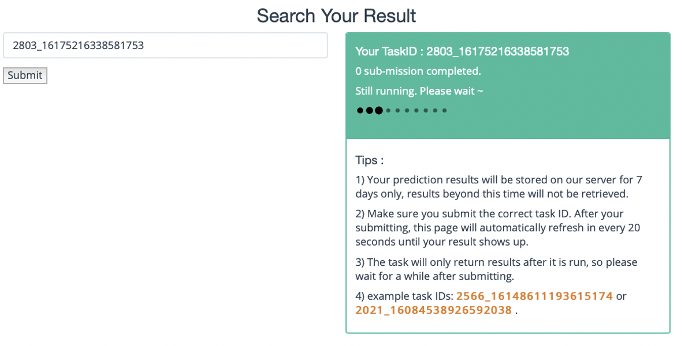
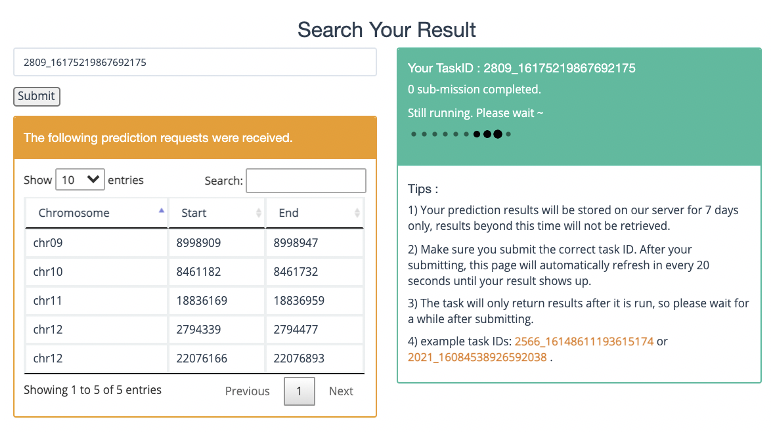
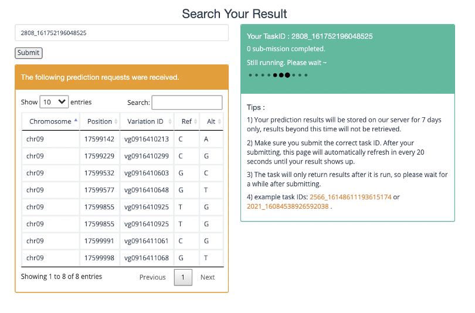

Submit Task¶
There are three ways to submit a task.
For Variant Effector, you can upload a VCF for query. The uploaded file must be a .vcf file ending. The format of the file can be viewed by downloading the sample file in the lower right corner.
For Sequence Profiler, you can:
Upload a BED for query. The uploaded file must be a BED file ending. The format of the file can be viewed by downloading the sample file in the lower right corner. For BED files, we only predict the first 5 lines of the file due to limited GPU resources.
Using chromosome and position queries. The results will output the effect on the open region of chromatin before and after the 200 bp sequence mutation around the position.
Note:Only rice model supports coordinates and intervals of multiple reference genomes.
After the task is submitted, it will return to Task ID and run in the background queue. After the task is submitted successfully, it will jump to the waiting interface as shown in the figure below.
For sequence or position input:
{kind=link}
For BED input:
{kind=link}
For VCF input:
{kind=link}
Remember your task ID and query the results after a while (a few minutes), and your prediction result will store on our server for only 7 days.